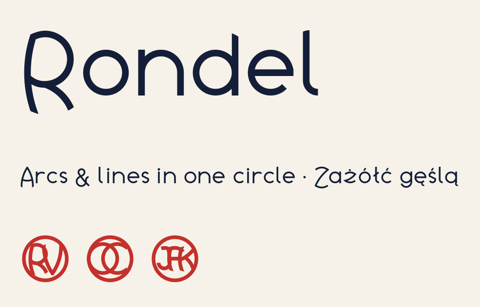

Rondel is a display typeface in which every letter, figure and symbol is drawn inside the same circle, using only arcs of circles and straight lines. Strokes that reach the edge are trimmed by that circle, so their ends are curved cuts lying on it.

The lowercase is built on a smaller circle with the same centre, and the capitals fill the outer one, so they sit around the lowercase like medallions. Accents are drawn from arcs and lines too. Typing one to three letters between < and >, such as <RV>, sets them as a single monogram: each initial is drawn in its own circle, and the circles overlap inside a ring.
Rondel covers the Latin languages of Western, Central and Eastern Europe. It is meant for headlines, logos, posters and badges, at 32 px and up.
To contribute, see github.com/q78717/font-rondel.